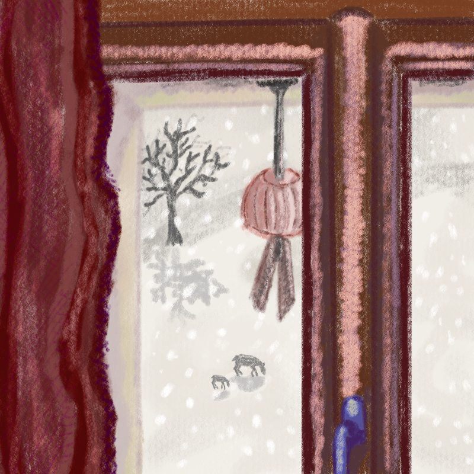

Creacover 2019 : J21
Publié le 03/02/2019 dans Dessin.
La musique du jour est Blink de 吉村弘 (Hiroshi Yoshimura).
Jolie musique très simple et épurée. En l’écoutant au petit matin, alors que la neige tombait derrière la fenêtre, je me suis dit qu’il y avait là une belle vision de détente et de plénitude. J’ai remplacé les bâtiments par un champ avec des biches.
C’est la première fois que je traite toute l’image avec des couleurs que je change avant la fin parce que l’« ambiance » du dessin ne collait pas à celle de la musique. Il manquait la tiédeur et la douceur.
